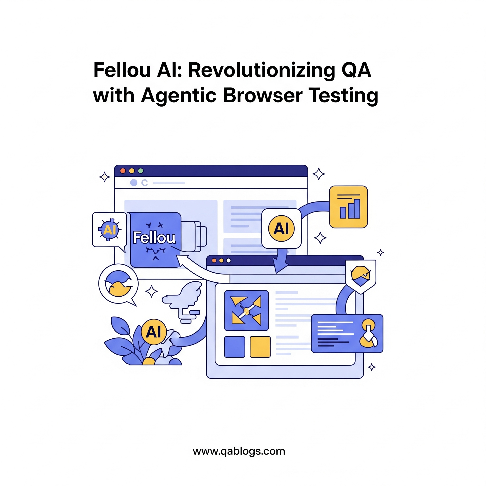

Revolutionizing QA: How Fellou AI's Agentic Browser Automates Your Testing Workflow

Key Takeaways
- Fellou AI's agentic browser revolutionizes QA with Deep Action technology for automated testing.
- It automates complex workflows, integrates with tools like Jira, and ensures military-grade security.
- Aligns with 2025 QA trends by meeting automation demands and bridging skill gaps with low-code capabilities.
- QA teams can integrate Fellou AI using natural language commands and CI/CD pipelines for efficient testing.
In 2025, the QA landscape is undergoing a seismic shift, driven by the need for faster, smarter, and more efficient testing workflows. Enter Fellou AI, the world’s first agentic browser, which is redefining how QA teams approach software testing. Launched in May 2025, Fellou AI leverages its Deep Action technology to automate complex testing tasks, streamline workflows, and boost productivity—all while maintaining military-grade security. This blog on QA Blogs explores how Fellou AI is revolutionizing QA, its key features, practical applications, and actionable steps for QA teams to integrate it into their processes, all optimized for SEO to reach QA professionals and tech enthusiasts.
What is Fellou AI and Its Agentic Browser?
Fellou AI, introduced on May 7, 2025, isn’t just another browser—it’s a next-generation agentic browser powered by AI, designed to act as an intelligent digital partner. Unlike traditional browsers like Chrome or Safari, which passively display web content, Fellou AI actively understands, interacts, and executes tasks on behalf of the user. For QA teams, this means a browser that can autonomously navigate websites, perform testing actions, and generate reports, all with minimal human intervention.
- Deep Action Technology: Fellou AI’s core innovation, enabling hands-free automation of complex workflows.
- Cross-Platform Integration: Connects seamlessly with tools like Notion, LinkedIn, and WordPress, making it ideal for diverse testing scenarios.
- Military-Grade Security: Ensures sensitive test data and user credentials remain protected during automation.
A May 2025 post on X described Fellou AI as “Chrome but with a brain,” highlighting its ability to handle deep research and workflows autonomously—a perfect fit for QA automation.
Why Fellou AI Matters for QA Teams in 2025
QA teams in 2025 face mounting pressure to deliver high-quality software at unprecedented speeds, as highlighted in TestRail’s June 2025 Report, where 43% of teams prioritized automation to support faster release cycles. Fellou AI addresses this challenge by transforming the browser into a proactive testing tool, aligning with several key trends:
- Automation Demand: TestRail’s report noted automation as a top priority, and Fellou AI delivers by automating end-to-end testing workflows.
- Shift-Left and Shift-Right Synergy: As discussed in “Weekly Recap: Top 5 Software Testing Innovations & Trends (June 15, 2025)”, Fellou AI supports both early testing (shift-left) and production monitoring (shift-right) by executing tests across the SDLC.
- Skill Gap Solutions: With low-code capabilities, Fellou AI bridges skill gaps, a trend noted in the same recap where low-code platforms are empowering non-technical testers.
Key Features of Fellou AI for QA Automation
Fellou AI offers a suite of features that make it a powerful tool for QA teams looking to automate their testing workflows in 2025:
- Deep Action Workflow Automation: Automates complex testing tasks with a single command, such as navigating a web app, filling forms, and validating outcomes.
- Intelligent Test Execution: Uses AI to understand web content and execute tests, adapting to UI changes without manual script updates.
- Cross-Platform Integration: Works with tools like Jira and Google Docs, allowing QA teams to automate test case documentation and reporting.
- Timeline for Multitasking: Tracks testing sessions, enabling teams to revisit and analyze past test runs without losing context.
- Split View for Efficiency: View multiple test scenarios side by side, streamlining comparison and analysis during testing.
- AI-Powered Reporting: Generates detailed test reports with insights, saving time on manual documentation.
Benefits of Using Fellou AI for QA Testing
Fellou AI’s agentic browser brings transformative benefits to QA workflows, addressing pain points identified in recent QA Blogs posts:
- Faster Testing Cycles: Automates repetitive tasks like form submissions or navigation, reducing testing time from hours to minutes, aligning with TestRail’s finding that automation speeds up releases.
- Reduced Maintenance Overhead: Adapts to UI changes automatically, minimizing the 43% challenge of fragile test suites noted in TestRail’s report.
- Enhanced Test Coverage: Executes tests across various scenarios and platforms, ensuring comprehensive validation, a key objective tied with automation in 2025.
- Improved Collaboration: Integrates with tools like Jira, enabling seamless communication between QA and development teams, as emphasized in “Shift-Left Testing: Embedding Test Cases Early in the SDLC.”
- Accessibility Compliance: Automates accessibility testing on web apps, supporting EAA compliance, as discussed in “Navigating the European Accessibility Act.”
Practical Applications of Fellou AI in QA Testing
Fellou AI’s capabilities are already making an impact in real-world QA scenarios in 2025:
- E-commerce Testing: A retailer uses Fellou AI to automate checkout flow testing across browsers, saying, “Fellou, test the checkout process on Chrome and Safari, and report any errors.” The browser executes the tests, validates payment forms, and generates a report in minutes, ensuring a seamless user experience.
- Financial Services: A banking app team leverages Fellou AI to test API integrations, instructing it to “Verify fund transfer functionality on our app and log results in Jira.” Fellou AI navigates the app, tests the API, and logs issues directly, aligning with privacy-first API testing trends from “Designing Effective Test Cases for Privacy-First Financial APIs.”
- SaaS Platforms: A SaaS provider automates regression testing by commanding Fellou AI to “Run regression tests on our dashboard and document results in Google Docs.” The browser handles the tests and documentation, supporting CI/CD integration needs highlighted in TestRail’s report.
How QA Teams Can Integrate Fellou AI into Their Workflow
Here’s a step-by-step guide for QA teams to adopt Fellou AI and automate their testing workflows in 2025:
1. Install and Set Up Fellou AI
What to Do: Download Fellou AI from its official website and install it
on your system. It’s compatible with major operating systems and requires no complex
setup.
Tip: Use the free trial to explore its features before committing to a
subscription.
2. Define Testing Goals with Natural Language Commands
What to Do: Use plain English to instruct Fellou AI on testing tasks,
such as “Test the login feature on our web app across Chrome and Safari.”
Benefit: Eliminates the need for scripting, making automation
accessible to non-technical team members, as noted in the low-code trend from the June
15 recap.
3. Automate End-to-End Testing Workflows
What to Do: Command Fellou AI to execute end-to-end tests, such as
navigating a user flow, submitting forms, and validating outcomes.
Example Command: “Fellou, test the registration process on our site,
check for errors, and log results in Jira.”
Tool Integration: Connect Fellou AI with Jira for seamless defect
tracking.
4. Leverage Split View and Timeline for Analysis
What to Do: Use Split View to compare test results across browsers and
the Timeline feature to revisit past test sessions for root cause analysis.
Benefit: Streamlines debugging, aligning with BrowserStack’s focus on
comprehensive debugging from “BrowserStack
Enables Playwright Testing on Real iOS Devices with Safari.”
5. Generate and Share AI-Powered Reports
What to Do: Instruct Fellou AI to compile test results into detailed
reports and share them via integrated tools like Google Docs or Notion.
Example Command: “Fellou, generate a report on today’s test runs and
save it to Google Docs.”
Benefit: Saves time on manual reporting, addressing TestRail’s call for
better metrics to measure automation ROI.
6. Integrate with CI/CD Pipelines
What to Do: Configure Fellou AI to trigger tests automatically within
your CI/CD pipeline, ensuring continuous testing with every code commit.
Tool: Use Jenkins or GitHub Actions for integration, as Fellou AI
supports CI/CD workflows.
7. Monitor and Refine Testing Processes
What to Do: Regularly review Fellou AI’s performance, using its
analytics to identify bottlenecks and optimize test coverage.
Tip: Join communities like Reddit’s r/QualityAssurance to share
insights and learn from peers, as suggested in previous QA Blogs posts.
Challenges and Considerations
While Fellou AI offers immense potential, QA teams should be aware of potential challenges:
- Learning Curve: Teams new to agentic browsers may need time to adapt to Fellou AI’s natural language interface. Training resources on Fellou’s website can help.
- Complex Workflows: Some intricate testing scenarios may require manual adjustments, as noted in Fellou AI’s documentation, where it’s still evolving for certain tasks.
- Cost: Fellou AI operates on a subscription model, and teams should evaluate pricing against their budget, though its time-saving benefits often justify the investment.
How Fellou AI Aligns with 2025 QA Trends
Fellou AI aligns seamlessly with the trends highlighted in “Weekly Recap: Top 5 Software Testing Innovations & Trends (June 15, 2025)”:
- Automation Focus: Supports the 43% of teams prioritizing automation by offering hands-free testing workflows.
- AI-Driven Testing: Enhances self-healing capabilities, reducing maintenance overhead, a trend noted with AI-driven testing tools.
- Cross-Platform Testing: Complements BrowserStack’s real-device testing by enabling automated tests across browsers and platforms.
FAQs
What is Fellou AI’s agentic browser?
Fellou AI is the world’s first agentic browser, launched in May 2025, that uses Deep Action technology to automate tasks like testing, research, and reporting, acting as an intelligent digital partner.
How does Fellou AI benefit QA teams?
It automates testing workflows, reduces maintenance, enhances coverage, and integrates with tools like Jira, speeding up release cycles and improving quality.
What tools does Fellou AI integrate with for QA?
Fellou AI connects with Jira, Google Docs, Notion, and CI/CD platforms like Jenkins, streamlining test execution and reporting.
How can QA teams start using Fellou AI?
Install Fellou AI, define testing goals with natural language commands, automate workflows, and integrate with CI/CD pipelines for continuous testing.
Conclusion
Fellou AI’s agentic browser is revolutionizing QA in 2025 by automating testing workflows with unparalleled efficiency and intelligence. By leveraging Deep Action technology, cross-platform integrations, and AI-powered reporting, QA teams can achieve faster release cycles, better quality, and seamless collaboration—all while addressing modern challenges like skill gaps and maintenance overhead. Start by installing Fellou AI, defining your testing goals, and integrating it into your CI/CD pipeline to experience the future of QA automation firsthand.
Ready to transform your QA workflow with Fellou AI? Share your experiences in the comments, and explore more QA innovations on QA Blogs!
Join Our Community of QA Professionals
Get exclusive access to in-depth articles, testing strategies, and industry insights. Stay ahead of the curve with our expert-curated content delivered straight to your inbox.
Nikunj Mistri
Founder, QA Blogs
About the Author